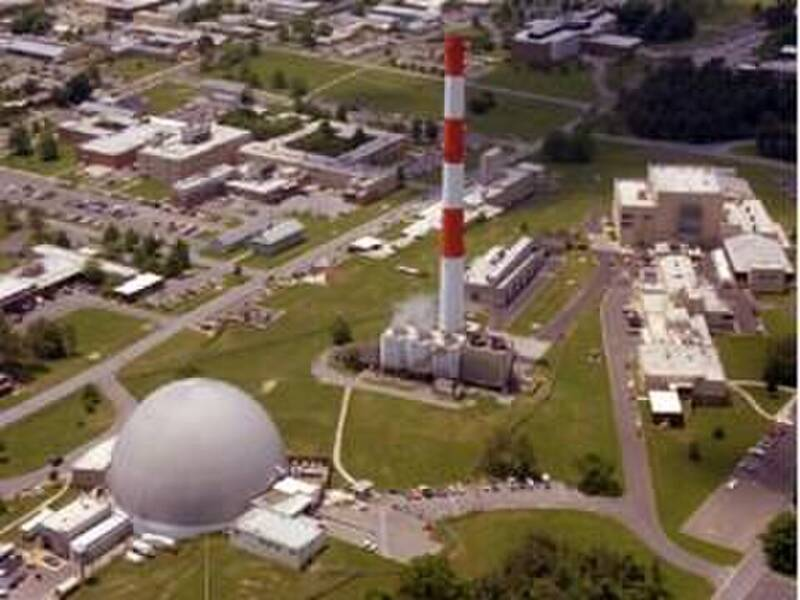

Brookhaven National Laboratory
Upton, Long Island, New York

A Department of Energy research laboratory, founded in 1947 on the site of the Army's former Camp Upton; work done here has won seven Nobel Prizes. Its Relativistic Heavy Ion Collider, running since 2000, drew doomsday fears before it opened. Long Island UFO lore places a 1992 crash in nearby Southaven Park. 1,2,3
Open in the interactive Watcher
Related
Sources
- Brookhaven National Laboratory Wikipedia
- Experts dismiss doomsday scenarios for RHIC Physics Today, Jan. 1, 2000
- They Believe: Long Islanders Allege UFO Sightings, Alien Abductions Long Island Press, Oct. 25, 2007